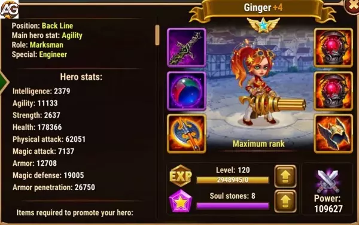

Guia da Ginger Hero Wars Mobile
Ginger em Hero Wars Alliance
Atributos Principais Posição: Linha de FundoFunção: AtiradorEstatÃsticas principal: AgilidadeFacção: ProgressoTier List 2024 Tier List de Herói: STier List de Hidra: BComo conseguir: Eventos, baú heroico, MissõesÚltima Atualização: 30/03/2024
Autor: Alexandre Domingos
Estratégias Avançadas para Utilizar Ginger em Hero Wars Alliance
Hero Wars Alliance oferece um vasto leque de estratégias e personagens únicos, e Ginger, uma atiradora poderosa da facção do progresso, é uma adição valiosa a qualquer equipe. Com sua habilidade excepcional, Tiro Distante, Ginger é capaz de aumentar o ataque fÃsico para heróis do progresso a cada ataque básico, tornando-a uma escolha popular para o famoso combo de heróis JJI (Julius, Juiz, Isaac) - o combo do escudo. Neste tutorial, vamos explorar estratégias avançadas para aproveitar ao máximo o potencial de Ginger em sua equipe.
Conhecendo Ginger
Ginger é uma atiradora formidável que se destaca na facção do progresso em Hero Wars Alliance. Sua habilidade Tiro Distante é especialmente poderosa, aumentando o ataque fÃsico para heróis do progresso a cada ataque básico. Essa capacidade a torna uma escolha ideal para o combo JJI, onde ela se beneficia do escudo fornecido por Juiz para se proteger enquanto causa danos devastadores aos inimigos.
Estratégias de Posicionamento
Uma das estratégias mais eficazes ao utilizar Ginger é posicioná-la como o herói mais distante da linha de frente. Isso garante que ela receba o escudo de proteção do Juiz desde o inÃcio da batalha, proporcionando-lhe uma camada adicional de defesa contra danos fÃsicos e mágicos. Manter Ginger protegida dessa forma é crucial para maximizar sua eficácia em combate e garantir que ela permaneça ativa durante toda a batalha.
Sinergias de Equipe
Além de seu papel como atiradora de dano, Ginger também pode contribuir para a sinergia geral da equipe. Ao combiná-la com outros heróis do progresso, como Julius e Isaac, é possÃvel criar um poderoso combo que não só maximiza o potencial de Ginger, mas também fortalece toda a equipe. Certifique-se de escolher heróis que complementem as habilidades de Ginger e aproveitem ao máximo sua capacidade de aumentar o ataque fÃsico.
Investimento Estratégico
Investir em Ginger é uma escolha inteligente para qualquer jogador de Hero Wars Alliance. Seu poder de dano fÃsico e sua capacidade de aumentar o ataque fÃsico para heróis do progresso a tornam uma adição valiosa a qualquer equipe. Ao priorizar seu desenvolvimento e fortalecimento, você estará garantindo que sua equipe tenha uma atiradora poderosa capaz de virar o jogo a seu favor.
Adaptação às Situações
Embora as estratégias mencionadas sejam poderosas, é importante lembrar que cada batalha é única. Esteja preparado para adaptar sua abordagem com base na composição da equipe inimiga e nas circunstâncias da batalha. Experimente diferentes formações e combinações de heróis para descobrir o que funciona melhor em diferentes situações.
Estratégias Avançadas de Combate
Além do posicionamento e das sinergias de equipe, é importante compreender como aproveitar ao máximo as habilidades de Ginger durante o combate. Aqui estão algumas estratégias avançadas que podem ajudá-lo a tirar o máximo proveito dela:
Foco nos Alvos Principais
Ginger é uma atiradora mortal, capaz de infligir danos significativos aos inimigos. Ao enfrentar equipes adversárias, concentre seus ataques nos alvos mais importantes, como os atiradores inimigos ou os heróis de suporte que oferecem cura ou buffs aos inimigos. Eliminar esses alvos primeiro pode desequilibrar a equipe inimiga e dar à sua equipe uma vantagem crucial.
Uso Estratégico de Habilidades
Além de seu ataque básico poderoso, Ginger também possui outras habilidades que podem ser usadas estrategicamente durante o combate. Seu ataque especial pode ser especialmente útil em momentos-chave da batalha, como para causar danos em área ou para interromper habilidades inimigas importantes. Certifique-se de usar suas habilidades de forma inteligente para maximizar seu impacto no campo de batalha.
Controle de Posicionamento
Como atiradora, Ginger é mais eficaz quando mantida em uma posição segura, longe dos perigos da linha de frente. No entanto, é importante monitorar seu posicionamento durante o combate e ajustá-lo conforme necessário. Se os inimigos estiverem se aproximando demais ou se Ginger estiver sendo alvo de ataques diretos, mova-a para uma posição mais segura para garantir sua sobrevivência e manter seu impacto no combate.
Coordenação de Equipe
Por fim, coordene os ataques de Ginger com o resto da equipe para maximizar seu potencial. Comunique-se com seus companheiros de equipe para garantir que eles estejam aproveitando ao máximo os benefÃcios do aumento de ataque fÃsico proporcionado por Ginger. Uma equipe bem coordenada pode superar até mesmo os oponentes mais poderosos e garantir a vitória em batalhas difÃceis.
Pontos Positivos e Negativos
Pontos Positivos
Causa dano em área
Bônus de ataque fÃsico para heróis do Progresso
Atirador de linha de fundo
Pontos Negativos
Pouca defesa fÃsica
Fraca contra times magos
Só é forte em equipes do progresso
Prioridades de Evolução de EstatÃsticas da Ginger em Hero Wars Alliance
Quando se trata da evolução das estatÃsticas da Ginger, é crucial entender quais aspectos devem ser priorizados para maximizar seu desempenho no campo de batalha. Aqui estão as prioridades de evolução de estatÃsticas para Ginger:
Perfuração de Armadura: Priorize a perfuração de armadura para causar mais dano aos inimigos.Ataque FÃsico: Aumente o ataque fÃsico para garantir que Ginger inflinja um dano significativo.Agilidade: Aprimore a agilidade para uma velocidade de ataque mais rápida e uma taxa de esquiva adicional.Vida: Aumente a vida para uma sobrevivência aprimorada.Defesa Mágica: Priorize a defesa mágica para proteção adicional contra ataques baseados em magia.
Prioridade de Glifos
Nos glifos da Ginger, priorize a perfuração de armadura para causar mais dano aos inimigos, em seguida, ataque fÃsico e agilidade, por último, vida e defesa mágica.
Prioridade de Glifos
Prioridade
Glifos
1º
Perfuração de Armadura
2º
Ataque FÃsico
3º
Agilidade
4º
Vida
5º
Defesa Mágica
Prioridade de Artefatos
Nos artefatos da Ginger, priorize o livro, pois aumenta a perfuração de armadura e o ataque fÃsico, em seguida, a agilidade para obter mais ataque fÃsico e armadura, e finalmente a arma que aumentará o ataque fÃsico quando ativada.
Prioridade de Artefatos
Prioridade
Artefatos
1º
Livro
2º
Agilidade
3º
Arma (Ataque FÃsico)
Prioridade de Skins
Nas skins da Ginger, priorize a perfuração de armadura para aumentar o dano, em seguida, agilidade para aumentar o ataque fÃsico e a armadura, depois as duas skins de ataque fÃsico e, por último, a defesa mágica.
Prioridade de Skins
Prioridade
Skins
1º
Perfuração de Armadura
2º
Agilidade
3º
Ataque FÃsico
4º
Ataque FÃsico
5º
Defesa Mágica
Ginger vs Hidras
Ginger não é um grande heróis contra as hidras, mas pode causar um dano razoável nas hidras se utilizada no time correto.
Ginger em Batalhas
Forte Contra
Keira, K'akh, Satori, Ishmael, Gêmeos
Ginger Counters
Jorgen, Lian, Jhu, Yasmine, Luther, Kayla, Dilúvio, Alvanor, Mojo, Orion
Melhores Times de Ginger
Nº
Composição do Time
1
Ginger, Dilúvio, Isaac, Juiz, Julius
2
Ginger, Isaac, Sebastian, Juiz, Julius
3
Ginger, Isaac, Nebula, Juiz, Julius
4
Astrid, Ginger, Isaac, Juiz, Julius
5
Ginger, Isaac, Jorgen, Juiz, Julius
6
Ginger, Isaac, Amira, Juiz, Julius
7
Jet, Ginger, Sebastian, Astaroth, Julius
8
Jet, Ginger, Sebastian, Andvari, Astaroth
9
Jet, Ginger, Isaac, Sebastian, Andvari
10
Jet, Ginger, Isaac, Sebastian, Astaroth
11
Jet, Ginger, Isaac, Sebastian, Arachne
12
Ginger, Danada, Isaac, Nebula, Machadinha
13
Jet, Ginger, Isaac, Sebastian, Machadinha
Estátisticas no NÃvel Máximo 2023

Ginger com Visual Solar, Hero Wars.
Habilidades no NÃvel Máximo
1ª Tempestade de Chumbo
Dispara rapidamente 7 cartuchos de chumbo da pistola, causando dano a todos os inimigos.
Dano por tiro: Max(8605) - (10% Ataque FÃsico + 20 * NÃvel)
2ª Tiro Penetrante
Dispara um mÃssil que penetra no inimigo e atinge o inimigo diretamente atrás dele.
Dano: Max(57338) - (75% Ataque FÃsico + 90 * NÃvel de Habilidade)
3ª Fogo de Supressão
Atira para o ar, danificando toda a equipe inimiga com chumbo grosso.
Dano: Max(34320) - (40% Ataque FÃsico + 85 * (NÃvel de Habilidade + 20) - 700)
4ª Tiro à Distância
Cada tiro consecutivo com o ataque básico causa dano fÃsico extra. Se o alvo atual de Ginger morrer, o dano extra será reiniciado.
Dano extra máximo: Max(20512) - (25% Ataque FÃsico + 50 * (NÃvel de Habilidade + 40) - 1000)
Conclusão: Ginger uma atiradora formidável
Ginger é verdadeiramente uma atiradora formidável em Hero Wars Alliance, capaz de causar danos significativos aos inimigos e fortalecer toda a equipe com seu aumento de ataque fÃsico. Ao seguir as estratégias avançadas delineadas neste tutorial e aproveitar ao máximo suas habilidades e sinergias, você estará no caminho certo para a vitória em suas próximas batalhas. Lembre-se de experimentar e ajustar sua abordagem conforme necessário para enfrentar os desafios que surgirem. Com dedicação e estratégia, Ginger pode ser a chave para o sucesso em suas aventuras em Hero Wars Alliance!
Sugestões de VÃdeo:
Ginger e Progresso em Batalhas
Você pode ter interesse:
 Ginger em Hero Wars Alliance
Ginger em Hero Wars Alliance
 Astrid
Astrid Isaac
Isaac Juiz
Juiz Julius
Julius Nebula
Nebula Sebastian
Sebastian